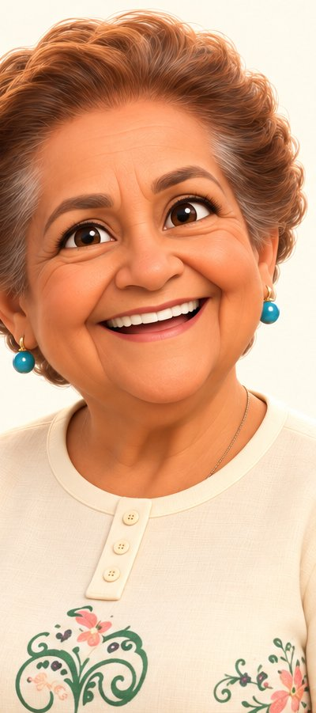
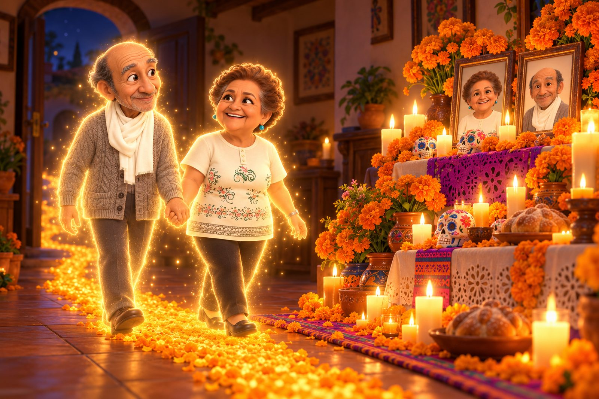
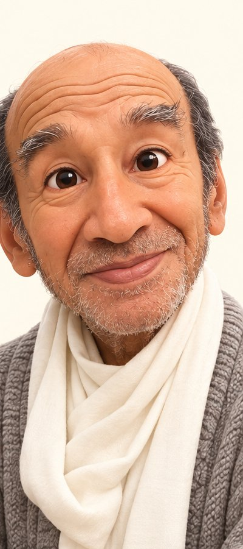

Abuelita Moreno
Su sonrisa grande y su cariño siguen aquí, en cada reunión de la familia.

Ya no están en la mesa, pero nunca se fueron de la casa. Cada Día de Muertos les ponemos el camino de cempasúchil para que vuelvan con nosotros.
▶ Ver la películaCon todo nuestro amor, la familia Moreno los recuerda así: sonriendo, juntos y tomados de la mano.

Su sonrisa grande y su cariño siguen aquí, en cada reunión de la familia.

Su ternura y su calma nos siguen acompañando, como siempre.
Un cuento animado del tío Raúl. Kailany, Chispita y Manta arman el camino de pétalos… y al final de la película los abuelitos vuelven a casa.
Tiene subtítulos en español. Súbele el volumen 🔊
Para que siempre encuentren el camino.